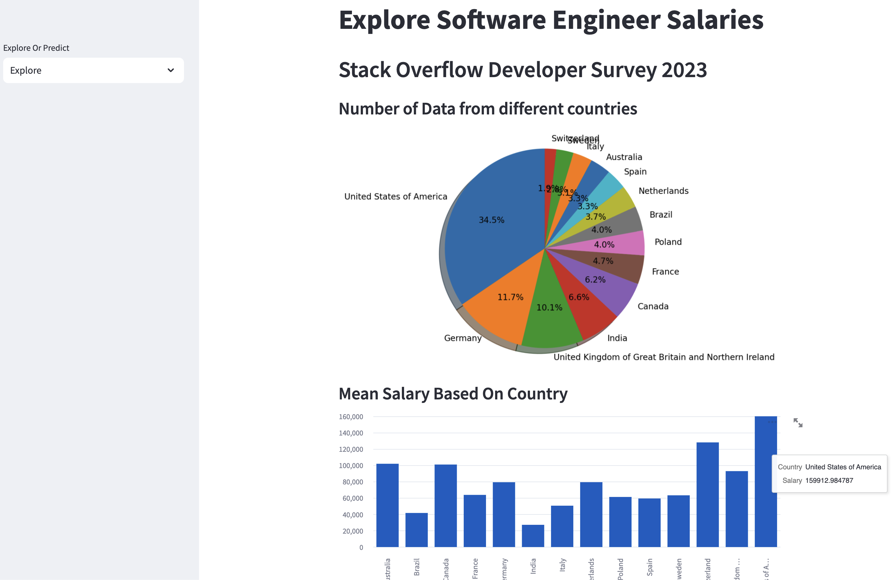

Income Prediction Machine Learning Project
Build a Machine Learning web application from scratch in Python with Streamlit. Use real world data from the
Stack Overflow Developer Survey to build a machine learning model.
In the predict page, we are going to predict the salary based on a few information that users has to put in.

In the explore page, we can explore the data that more than 89,000 people had filled out. Here i simply plot a pie chart to show the number of data from different countries. And we scroll down, we can get the mean salary based on countries.
We can see the mean salary based on the experience from the line chart and mean salary based on education level from the bar chart.